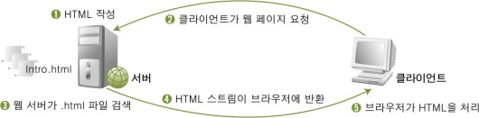

HTML이란 무엇인가?
HTML(Hyper Text Markup Language)은 가장 단순한 형태의 웹 언어이다. 웹 서버에 HTML 문서를 저장하고 있다가 클라이언트가 특정 HTML 페이지를 요청하면 해당 HTML 문서를 클라이언트로 전송한다.

초기의 웹 서비스는 정적인 웹 페이지가 대부분이었다. 대학에서 교양 과목으로 처음 홈페이지
를 만들어볼 때도 대부분 이런 정적인 웹 페이지를 만든다. 정적인 웹 페이지는 고객의 취향이
나 변화에 적응할 수 없고 새로운 것을 추가하는 데 많은 시간이 걸린다는 단점이 있지만 보안
에는 장점이 많다.
웹 해킹은 웹 브라우저와 웹 서버 사이에 전달되는 값들의 변조를 통해 웹 서버의 설정이나
로직을 바꾸는데, 정적인 웹 페이지는 '바꿀 수 있는 가능성'이 매우 낮기 때문이다.
※ 참고
src -source 경로
href - Hypertext REFerence 하이퍼텍스트 참조
h - heading
br - break
ul, ol, li - unordered list, order list, list
a - anchor 닻
division - 분할, 분배